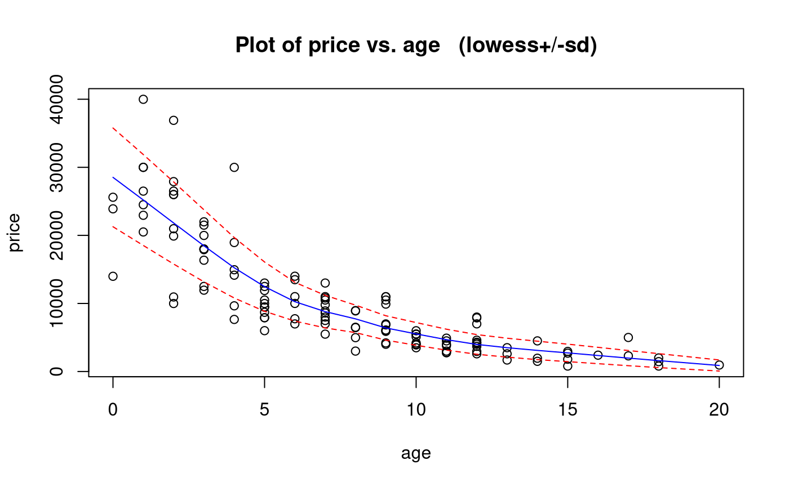
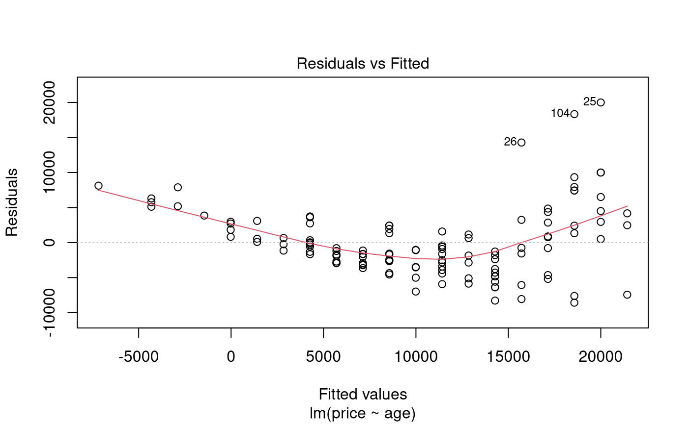
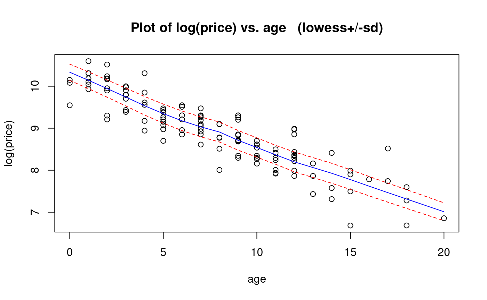
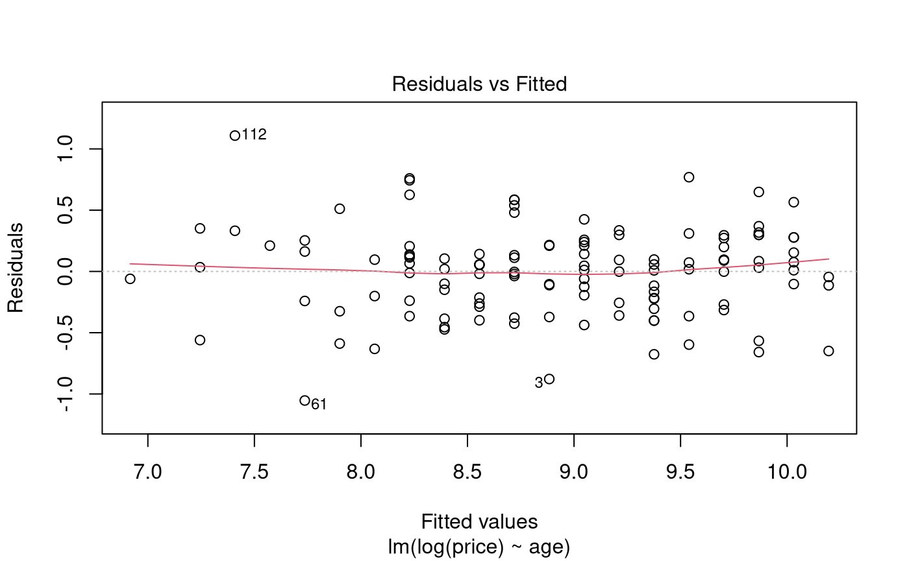
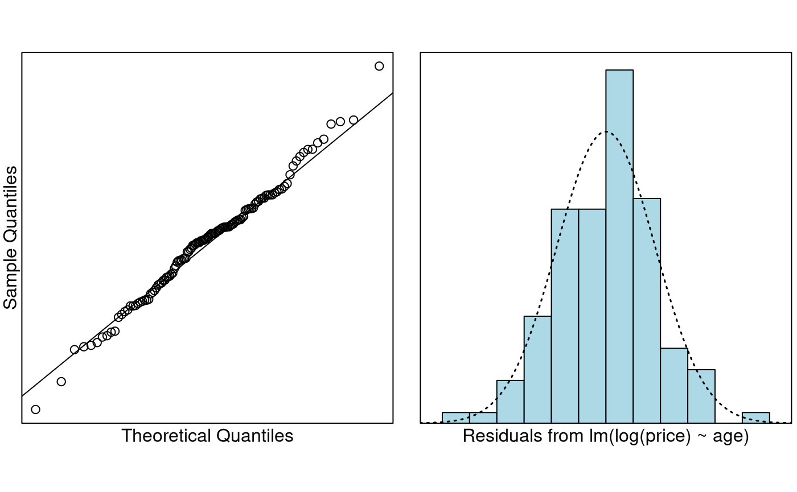

Problem
The ages and prices of 123 Mazda cars were collected from the Melbourne Age newspaper in 1991. We want to learn about Mazda prices, and how they decrease with age.
The variables measured are:
-
price: Price in Australian $. -
year: Year of manufacture (note that 1990 = 90).
Read in and Inspect the Data
Mazda.df = read.table("mazda.txt", header = TRUE)
head(Mazda.df)
# We need to creates a new variable called age ourselves
Mazda.df$age = 91 - Mazda.df$year
head(Mazda.df)
# Plot these data
trendscatter(price ~ age, data = Mazda.df)## year price
## 1 79 2950
## 2 82 5900
## 3 83 2999
## 4 88 11950
## 5 82 6100
## 6 90 26500## year price age
## 1 79 2950 12
## 2 82 5900 9
## 3 83 2999 8
## 4 88 11950 3
## 5 82 6100 9
## 6 90 26500 1
The scatter plot shows a decreasing non-linear relationship. As the age increases, the price decreases - but the rate of decrease is rapid at first, then declines, so also decrease. This suggests an exponentially decreasing relationship.
We also see that the scatter around the trend is not constant: it is higher when the price is higher and lower when the price is lower, so higher centre is associated with higher spread.
Let’s fit a naive simple linear model using age for now.
Model Building and Check Assumptions

trendscatter(log(price) ~ age, data = Mazda.df)

normcheck(PriceAge.fit2)
cooks20x(PriceAge.fit2)
summary(PriceAge.fit2)##
## Call:
## lm(formula = log(price) ~ age, data = Mazda.df)
##
## Residuals:
## Min 1Q Median 3Q Max
## -1.0531 -0.2398 0.0311 0.2110 1.1085
##
## Coefficients:
## Estimate Std. Error t value Pr(>|t|)
## (Intercept) 10.195210 0.063602 160.3 <2e-16 ***
## age -0.163915 0.007034 -23.3 <2e-16 ***
## ---
## Signif. codes: 0 '***' 0.001 '**' 0.01 '*' 0.05 '.' 0.1 ' ' 1
##
## Residual standard error: 0.3615 on 121 degrees of freedom
## Multiple R-squared: 0.8178, Adjusted R-squared: 0.8163
## F-statistic: 543.1 on 1 and 121 DF, p-value: < 2.2e-16## 2.5 % 97.5 %
## (Intercept) 2.360688e+04 3.036744e+04
## age 8.370758e-01 8.607164e-01## 2.5 % 97.5 %
## (Intercept) 2360588.14537 3036644.20481
## age -16.29242 -13.92836Method and Assumption Checks
The scatter plot of age vs price showed clear nonlinearity and an increase in variability with price.
Residuals from a simple linear model showed failed the equality of variance and no-trend assumptions, and so the prices were log transformed. A simple linear model fitted to logged price satisfied all assumptions.
Our final model is where .
Our model explained 82% of the variability in the logged Mazda prices.
Executive Summary
We wanted to see how Mazda car prices decrease with age.
There was clear evidence the price of the cars was exponentially decreasing as the cars got older (P-value 0).
We estimate that the median price for new Mazda cars (in 1991) was between A$23,600 to A$30,400 (to the nearest A$100).
We estimate that each additional year in age results in depreciation of between 13.9% to 16.3%.